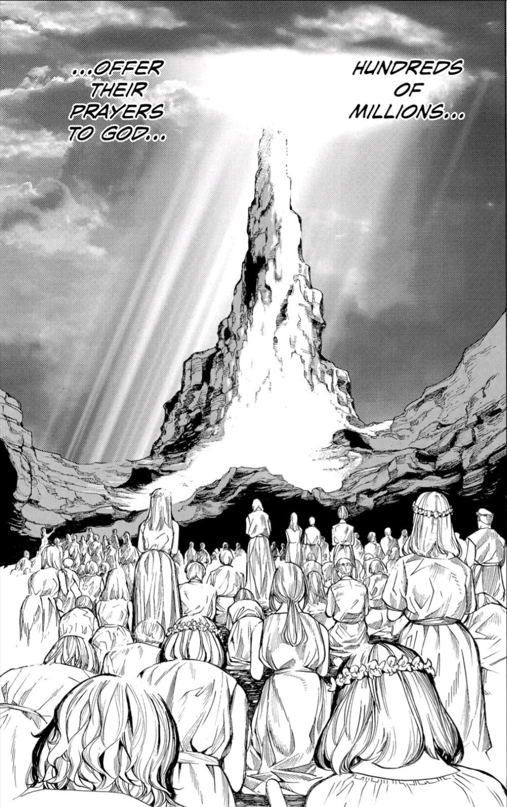

I understand that this section has become too negative, I do not intend to attack religions but bring focus towards the deeprooted problems which need to be addressed urgently but likely never will be.
Religion
Reality is harsh and sad.
Escapes are important part of life, I personally love movies not just for the escapism they offer into other worlds but I have also formed a deep appreciation for cinematography itself. But when the movie ends you are back into the real world. The distinction between the movie and the real world is obvious and you certainly don't start believing the fiction to be real. Religion is like a movie too, fictious stories that have no underlying proof and reasoning.
Most religions have good teachings and guides how to live a proper life which I appreciate. What I do not appreciate however is the submission of individuals to their religion, undermining their reasoning and curiosity and the very distortion in perceiving the real truth. Religious individuals have a right to practice but I believe it is also important to open their eyes to the modern science and stop ignoring scientific facts based on logic that contradict stories.
Some people live in towers so tall, they look down upon the clouds. Others sit on the ground without home around them resisting starvation. Some people eat everything they want and throw away the rest. Others cannot have a single cup of water to drink. Some people rule over the weak. Others have their lives ripped away from them. AND Hundreds of Millions offer their prayers to God. This is the true nature of our world.

Weaponisation Of Religions
As we have seen from Reality section, religions are really good at trapping people in Plato's caves. Thus dividing them at the level of fundamental beliefs. This phenomenon is being actively exploited by Governments and organisations around the world to perform deeds that I can only describe as true horrors unfolding right in front of our eyes. Some examples include:
Israel
The State of Israel is justifying its genocide of gaza by comparing their actions to the religious text of Jews.
Prime Minister Benjamin Netanyahu said that Israelis were united in their fight against Hamas, whom he described as an enemy of incomparable cruelty. “They are committed to completely eliminating this evil from the world,” Netanyahu said in Hebrew. He then added: “You must remember what Amalek has done to you, says our Holy Bible. And we do remember.”
There are more than 23,000 verses in the Old Testament. The ones Netanyahu turned to, as Israeli forces launched their ground invasion in Gaza, are among its most violent—and have a long history of being used by Jews on the far right to justify killing Palestinians.
Israel has bombed two synagogue's so far in Iran to persuade the minority jewish population residing there to migrate to Israel. The constitution of Iran gave rights to minority population to practice their religion and yet some of the Jews are destroying their own temples for their cause. This instance suggests that the Elites who control the system do not believe or fear God themselves but exploit the belief of normal people for their own benefits. The two bombings were justified as being hit mistakenly while targeting nearby adversaries.
Girl Brides of Yemen
Yemen is under the influence of Sharia Law and has currently no minimum legal age of marriage since 1999 when Yemen’s parliament, citing religious grounds, abolished article 15 of Yemen’s Personal Status Law, which set the minimum age for marriage for boys and girls at 15.
It is common for girls to get married from as early as ages 8 and get pregnant by 13 years of age. I cannot even begin to grasp the conditions and psychological trauma of these poor little girls who get pregnant with their underdeveloped mind and body and face highest mortality rates in the region.
There are many factors governing this phenomenon but the fact that Prophet Mohammad also married his first wife—Aisha when she was only 9 becomes a driver when the lesser educated followers of Islam naturally follow their prophet's footsteps. The parliament has clearly weaponized religion here.
USA
Manipulating Bible
The US Government being a puppet of Israel has actively maintained how its a moral duty of American Christians to support Israel in its deeds by manipualting the meaning of bible's text.
India
In India the RSS (a paramilitary organisation) which has one goal of converting India into a pure Hindu nation has actively maintained enemity and racism between majority hindu and the minority muslim population for a long time.
Formidable things achieved by Religions
The deeprooted common beliefs imposed by religion upon its followers has it's commendable outcomes as well :
Financial System of Iran
Iran is not only the largest and strongest of the Islamic countries but operates the world’s only fully interest-free (riba-free) banking regime. This stands in direct contrast to the conventional Western model, which relies on interest as its primary revenue mechanism.
It does appear to be ethically better in theory but I do suspect that in practice it has lot of potential to be exploited especially in an autocratic regime and I also believe just considering one aspect is not enough to justify it as morally superior. I hate the financial system and therefore lack enough knowledge to make a clear argument. I will leave it as a hypothesis for now, any suggestions are appreciated.